After completing this lesson, you’ll be able to:
Many users begin a workspace by adding a single reader and writer. However, you will quickly find yourself needing to add additional readers, writers, or feature types. Additionally, FME can read/write data using:
An FME workspace is not limited to any particular number of readers or writers; readers and writers can be added to a workspace at any time, any number of formats can be used, and there does not need to be an equal number of readers and writers.
For example, the Navigator window below shows this workspace contains two readers and three writers, each with different formats.
It's important to note that readers and writers don’t appear as objects on the Workbench canvas. Their feature types do, but readers and writers don't.
Instead, they are represented by entries in the Navigator window, as in the above screenshot.
Additional readers or writers are added to a translation using the Quick Add menu:
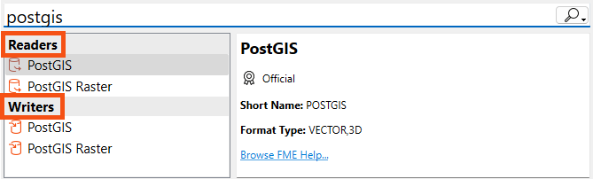
...Or by selecting Readers > Add Reader (Writers > Add Writer) from the menu bar:

...Or for readers, by clicking and dragging a file onto the canvas:
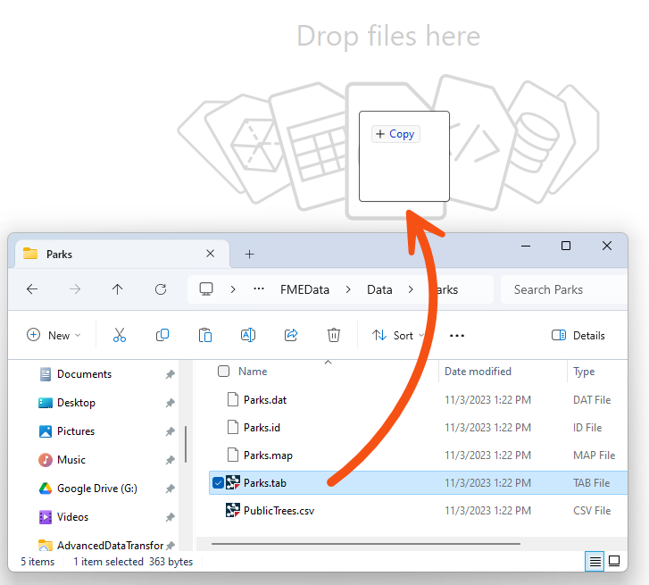
All these actions open a dialog, similar to the Generate Workspace dialog, in which the parameters for the new reader or writer can be defined:
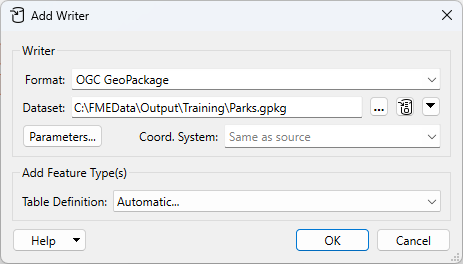
If you use Quick Add or the click-and-drag methods, the Add Reader dialog will automatically fill in the Format parameter. Note that FME will guess the Format based on the file ending when clicking and dragging, so make sure to double-check it. Some reader formats use the same file ending, e.g., GeoJSON and JSON can both use the .json file ending.
You can add as many readers and writers as you require in this way.
If you no longer need a reader or writer, then you can delete it using the menu bar:
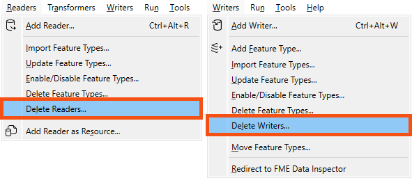
Alternatively, it's possible to right-click a reader/writer in the Navigator window and choose the Delete option.
Readers and writers can be updated so that older workspaces have the speed and functionality available in a newer version of FME. You can update a reader/writer by right-clicking the reader/writer in the Navigator window and choosing the Update option:
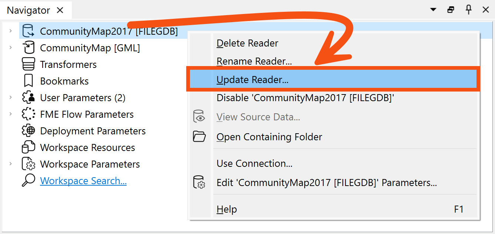
This tool provides the option to update the reader or update the list of feature types being read. This way, the workspace can be updated if the source data changes. Another way to update feature types is Reader > Update Feature Types on the menu bar.
Do you want to always read all the feature types in a dataset, even if it changes? You can merge feature types in this case.
Learn more in Define Schema Dynamically from Incoming Datasets.
The Import Feature Types function adds feature types to an existing dataset by importing the schema from any dataset.
The log will display processing information and the feature types will be added to the selected dataset.
If the structure of the data changes in your workspace (for example, the schema changes or an attribute type changes) you will usually want to keep your workspace up-to-date. This is a particularly useful feature if you are working with databases, or if you are sharing data within a workgroup.
Select Readers > Update Feature Types or Writers > Update Feature Types.
You can delete feature types by right-clicking them on the Canvas and selecting Delete.
If you delete the last feature type belonging to a reader or writer, FME will ask if you also wish to delete the reader or writer. We recommend doing so unless you plan to add feature types later.

Frank is working on a workspace that reads from the community mapping geodatabase and writes to GML. He needs to make some updates before republishing it to FME Flow to power a self-serve Flow App.
Here are the changes he needs to make:
Let's help him out.
Frank opens his starting workspace using FME Workbench (2025.0.1 or later).
It's very basic right now; it just reads and writes from the CommunityCentres feature class in the geodatabase:
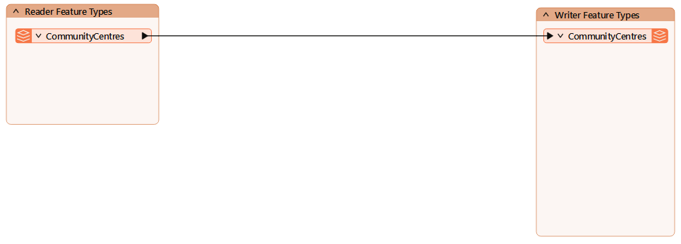
First, Frank will add the new reader feature types.
It's a good idea to add the reader feature types first, especially if you plan to duplicate them on one or more writers. Then you can quickly use their schema when adding the new writer feature types.
He clicks Readers > Import Feature Types:
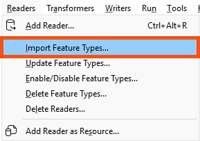
Since there is only one reader in the workspace, FME automatically fills in the required information in the Import Reader Feature Types dialog:
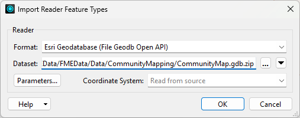
He confirms it is pointing to the CommunityMapping GDB (C:\FMEData\Data\CommunityMapping\CommunityMap.gdb) and clicks OK.
Next, he is prompted to choose the feature types to import. He selects the three new ones requried in this workspace: FoodVendors, Parks, and TransitStations:
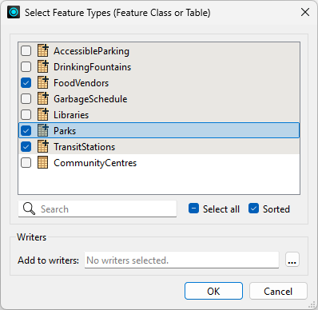
He clicks OK to import the new reader feature types.
At this stage, he could also re-import CommunityCentres if there were schema changes he wanted to bring into the workspace. But that's not required this time.
The new feature types appear on the canvas and he places them under the CommunityCentres reader feature type:
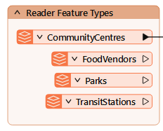
3) Add Parks SQLite Writer
Next, Frank wants to add the SQLite writer.
He uses Writers > Add Writer and sets the Format to SQLite and the dataset to C:\FMEData\Output\Training\Parks.sqlite.
Then he chooses Copy from Reader... for the Table Definition so he can copy the schema from the Parks reader feature type:
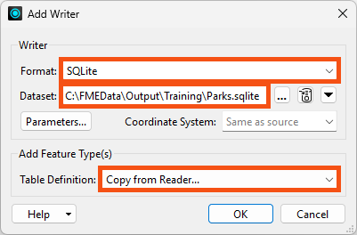
He clicks OK.
He selects Parks as the reader feature type to copy:
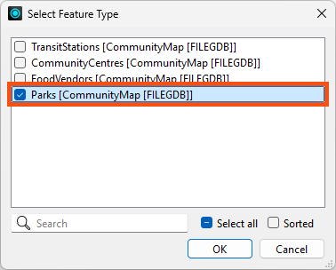
He clicks OK.
The Parks writer feature type is added to the Canvas. He moves the Parks reader feature type to the bottom of its bookmark and connects it to the writer:
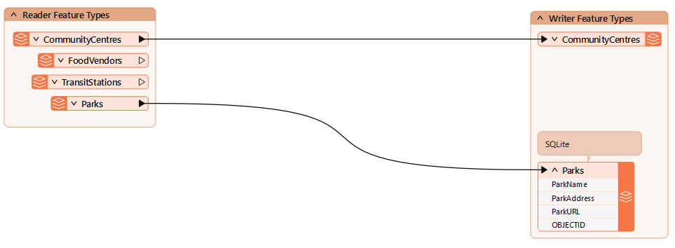
Now he'd like to add the new feature types to the existing GML writer.
If these layers already existed in the GML file, he could use Writers > Import Feature Types, but because he'll be creating them with this workspace, he has to use Writers > Add Feature Type instead:
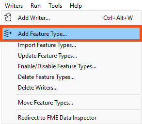
He clicks it and names the first one FoodVendors and sets the Writer to Output [GML]:
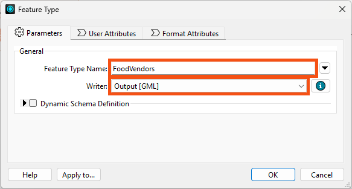
He clicks OK.
He repeats the steps to add the TransitStations and Parks writer feature types.
He connects the new feature types to their corresponding writer feature types:
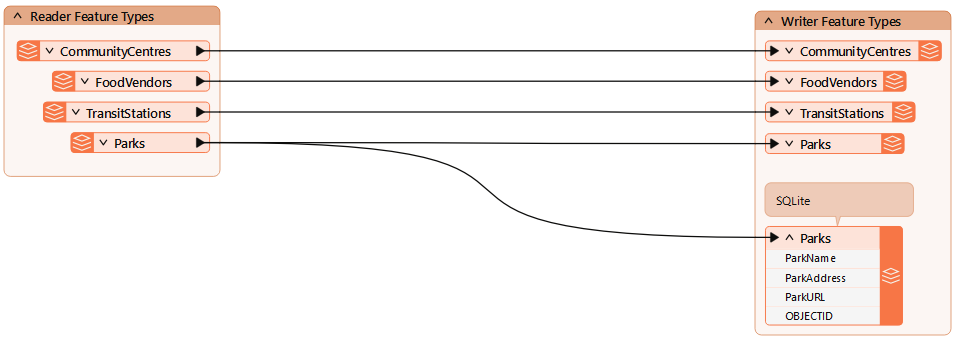
Great! His workspace has the correct feature types now.
Next, he'll have a look at configuring the reader and writer parameters.